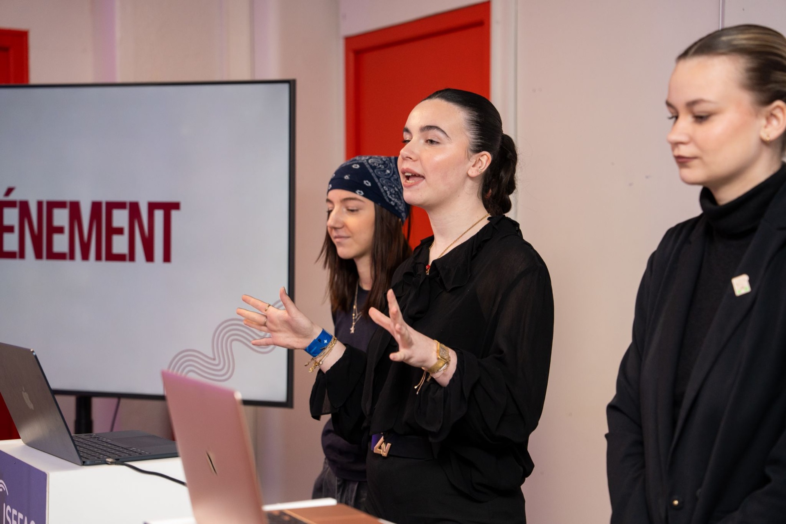
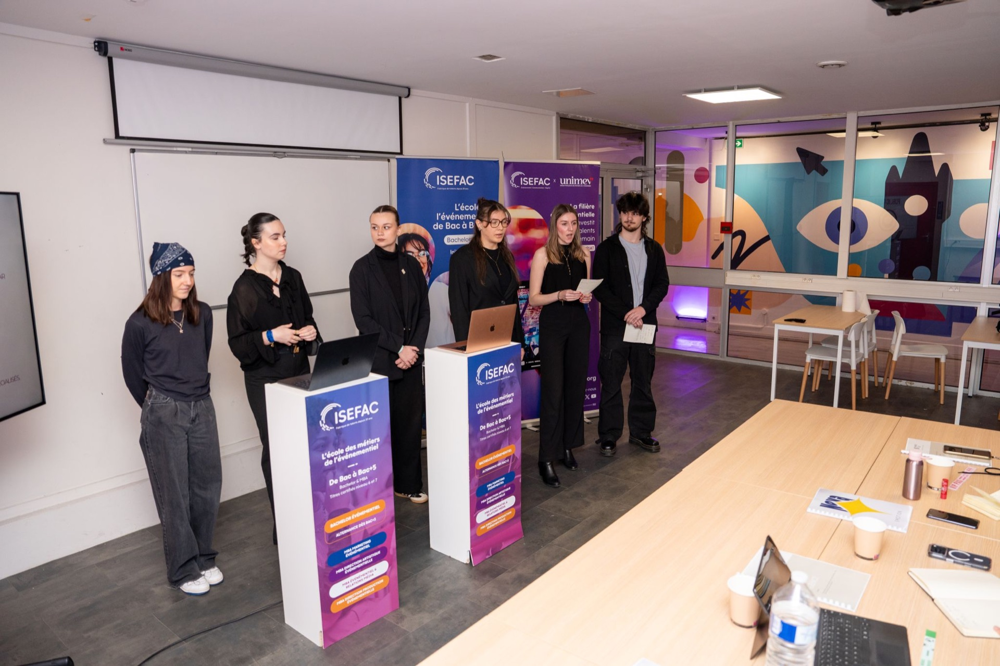
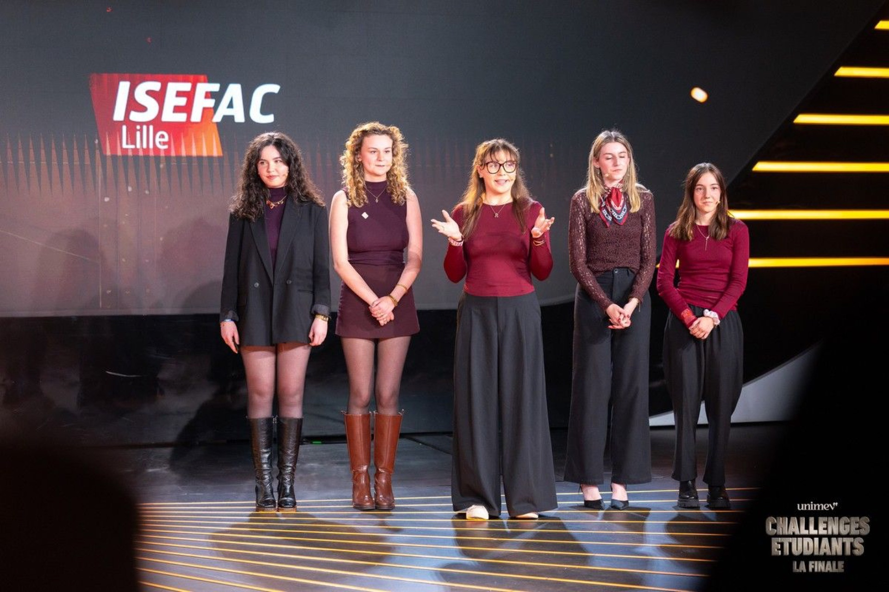
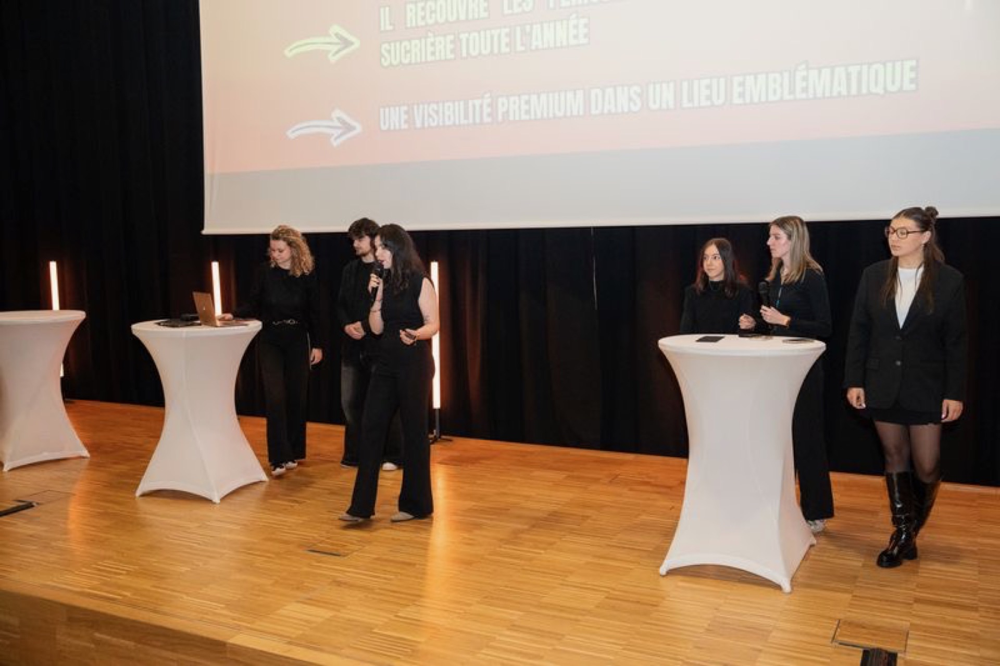

Finale nationale UNIMEV — Concept festival
Le Carré
Gourmand
Un festival culinaire immersif pensé comme un véritable parcours visiteur. Quatre univers thématiques, une réflexion globale sur l'expérience sensorielle et une proposition suffisamment solide pour atteindre la finale nationale UNIMEV.





Le projet
Concevoir un festival culinaire immersif de A à Z
Le Carré Gourmand est né d'un brief de conception : créer un événement culinaire original, capable de se distinguer dans un marché saturé. L'ambition était de dépasser le simple salon gastronomique pour proposer une expérience immersive totale, où chaque espace raconte quelque chose et où le visiteur devient acteur de son propre parcours.
Le concept s'articule autour de quatre univers thématiques distincts, pensés comme des espaces de vie à part entière : chacun possède son ambiance, ses codes visuels, ses animations et sa proposition culinaire. Ensemble, ils forment un parcours cohérent et progressif qui guide le visiteur à travers une expérience sensorielle complète.
Ce projet a été sélectionné pour la finale nationale UNIMEV, le concours majeur de l'événementiel étudiant en France. Une reconnaissance qui valide non seulement la créativité du concept, mais aussi sa solidité structurelle et sa faisabilité opérationnelle.
Concept
Quatre univers, un seul parcours
Chaque univers a été pensé non pas comme une simple zone thématique, mais comme une destination à part entière. L'enjeu était de créer des transitions fluides qui maintiennent l'immersion tout en offrant des expériences radicalement différentes d'un espace à l'autre.
La conception a intégré dès le départ les dimensions scénographiques, programmatiques, culinaires et communicationnelles. Chaque choix — couleurs, matériaux, animations, sélection des producteurs — répondait à une logique d'ensemble cohérente, celle d'un festival qui respecte ses visiteurs et leur offre bien plus qu'une simple dégustation.
Démarche
De l'idéation à la structuration complète
- Idéation du concept global : positionnement, angle créatif, territoire de marque du festival
- Conception des quatre univers thématiques : ambiances, codes visuels, proposition culinaire pour chacun
- Réflexion sur le parcours visiteur : logique de déambulation, transitions, points de contact émotionnels
- Structuration complète du dossier de concept : argumentaire, visuels, données opérationnelles
- Travail de réflexion stratégique : modèle économique, partenariats envisagés, public cible
- Préparation et présentation orale pour la sélection et la finale nationale UNIMEV
Bilan
Création, organisation, réflexion stratégique
Le Carré Gourmand est le projet qui illustre le mieux ma capacité à penser un événement dans toutes ses dimensions simultanément : l'expérience visiteur, la cohérence conceptuelle, la faisabilité logistique et la dimension économique.
Atteindre la finale nationale UNIMEV face à des équipes d'écoles de toute la France a été une validation importante. Elle confirme que ma manière d'aborder la création événementielle — rigoureuse, systémique, toujours ancrée dans l'expérience humaine — est pertinente à un niveau professionnel.